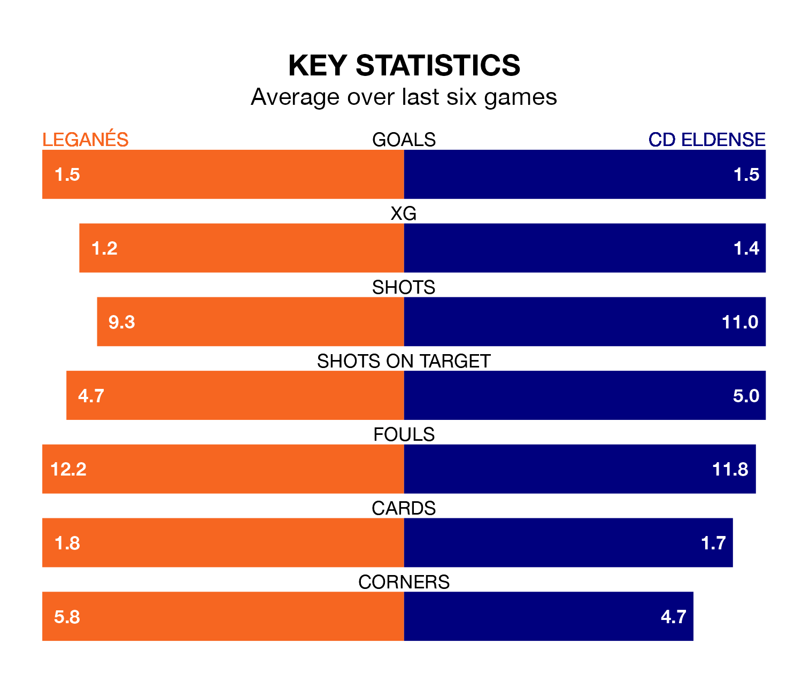

Leganés host CD Eldense in Sunday's late match at Estadio Municipal de Butarque looking to bounce back from defeat last time out in the Segunda División.
Leganés, who sit top of the league after 18 games, fell to a 1-0 away defeat to Real Zaragoza on December 2.
They face an Eldense side who also lost their last match, a 3-0 defeat to CD Tenerife, and who sit 15th in the table.
With 28 goals in 18 games so far this season, Leganés are scoring more than average in the league with 1.6 goals per game. And they are conceding fewer than average, letting in 10 goals at a rate of 0.6 per game.
Eldense, meanwhile, are average scorers, with 1.2 goals per game. They have conceded 1.5 goals per game.
In Miguel De La Fuente Escudero, the hosts have one of the league's sharpest shooters so far this season. He has notched eight goals in 15 appearances, to sit second in the scoring charts.
His goal rate of one every 127 minutes is quicker than that of Juan Tomás Ortuño Martínez, CD Eldense's top scorer with a goal every 143 minutes, and a total of five goals in 15 games.
Leganés are in reasonable form in the Segunda División, with three wins and two draws from their last six games.
With three wins and a draw over that period, the away team's form is slightly worse – they have taken 10 points from 18, compared to Leganés' 11.
